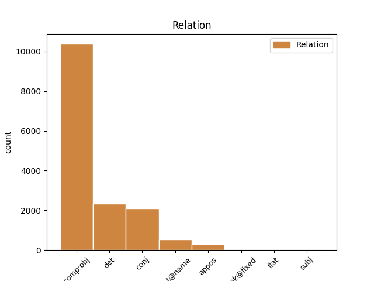
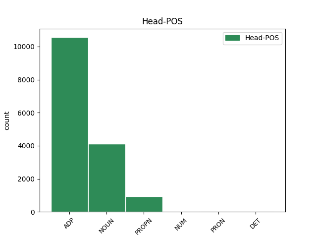
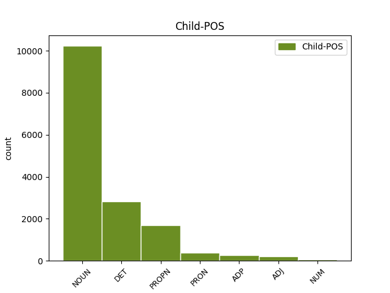

Distribution of features within this leaf



Agreement Rules sorted by frequency.
- When the dependent token is the direct object complements(comp:obj) of the head token, and the head token is ADP
1 KOČEVJE _ _ _ _ 0 _ _ _
2 Iz _ _ _ _ 0 _ _ _
3 Kočevja _ _ _ _ 0 _ _ _
4 proti _ _ _ _ 0 _ _ _
5 Ljubljani _ _ _ _ 0 _ _ _
6 v _ _ _ _ 0 _ _ _
7 prihodnje _ _ _ _ 0 _ _ _
8 ne _ _ _ _ 0 _ _ _
9 bodo _ _ _ _ 0 _ _ _
10 vozili _ _ _ _ 0 _ _ _
11 zgolj _ _ _ _ 0 _ _ _
12 les _ _ _ _ 0 _ _ _
13 , _ _ _ _ 0 _ _ _
14 neprecenljivo _ _ _ _ 0 _ _ _
15 bogastvo _ _ _ _ 0 _ _ _
16 poraščene _ _ _ _ 0 _ _ _
17 pokrajine _ _ _ _ 0 _ _ _
18 tik _ _ _ _ 0 _ _ _
19 ob _ _ _ _ 0 _ _ _
20 hrvaški _ _ _ _ 0 _ _ _
21 meji _ _ _ _ 0 _ _ _
22 , _ _ _ _ 0 _ _ _
23 gneča _ _ _ _ 0 _ _ _
24 na _ _ _ _ 0 _ _ _
25 cesti _ _ _ _ 0 _ _ _
26 bo _ _ _ _ 0 _ _ _
27 tudi _ _ _ _ 0 _ _ _
28 zaradi _ _ _ _ 0 _ _ _
29 povečane _ _ _ _ 0 _ _ _
30 zmogljivosti _ _ _ _ 0 _ _ _
31 pri pri ADP Sl Case=Loc 0 _ _ _
32 proizvodnji proizvodnja NOUN Ncfsl Case=Loc|Gender=Fem|Number=Sing 31 comp:obj _ Dep=30|Rel=Atr
33 najbolj _ _ _ _ 0 _ _ _
34 znanih _ _ _ _ 0 _ _ _
35 slovenskih _ _ _ _ 0 _ _ _
36 sirov _ _ _ _ 0 _ _ _
37 . _ _ _ _ 0 _ _ _
1 Zdaj _ _ _ _ 0 _ _ _
2 je _ _ _ _ 0 _ _ _
3 že _ _ _ _ 0 _ _ _
4 jasno _ _ _ _ 0 _ _ _
5 , _ _ _ _ 0 _ _ _
6 da _ _ _ _ 0 _ _ _
7 na _ _ _ _ 0 _ _ _
8 občinski _ _ _ _ 0 _ _ _
9 ravni _ _ _ _ 0 _ _ _
10 strankarska _ _ _ _ 0 _ _ _
11 ideologija _ _ _ _ 0 _ _ _
12 ne _ _ _ _ 0 _ _ _
13 igra _ _ _ _ 0 _ _ _
14 nobene noben DET Pz-fsg Case=Gen|Gender=Fem|Number=Sing|PronType=Neg 15 det _ Dep=15|Rel=Atr
15 vloge vloga NOUN Ncfsg Case=Gen|Gender=Fem|Number=Sing 0 _ _ _
16 več _ _ _ _ 0 _ _ _
17 . _ _ _ _ 0 _ _ _
1 Evropski _ _ _ _ 0 _ _ _
2 finančni _ _ _ _ 0 _ _ _
3 ministri _ _ _ _ 0 _ _ _
4 so _ _ _ _ 0 _ _ _
5 prepričani _ _ _ _ 0 _ _ _
6 , _ _ _ _ 0 _ _ _
7 da _ _ _ _ 0 _ _ _
8 ima _ _ _ _ 0 _ _ _
9 izbrani _ _ _ _ 0 _ _ _
10 kandidat _ _ _ _ 0 _ _ _
11 dovolj _ _ _ _ 0 _ _ _
12 izkušenj izkušnja NOUN Ncfpg Case=Gen|Gender=Fem|Number=Plur 0 _ _ _
13 in _ _ _ _ 0 _ _ _
14 sposobnosti sposobnost NOUN Ncfpg Case=Gen|Gender=Fem|Number=Plur 12 conj _ Dep=12|Rel=Coord
15 za _ _ _ _ 0 _ _ _
16 tako _ _ _ _ 0 _ _ _
17 pomemben _ _ _ _ 0 _ _ _
18 položaj _ _ _ _ 0 _ _ _
19 . _ _ _ _ 0 _ _ _
1 DUBLIN _ _ _ _ 0 _ _ _
2 Irsko _ _ _ _ 0 _ _ _
3 predsedstvo _ _ _ _ 0 _ _ _
4 Evropske _ _ _ _ 0 _ _ _
5 unije _ _ _ _ 0 _ _ _
6 je _ _ _ _ 0 _ _ _
7 sporočilo _ _ _ _ 0 _ _ _
8 , _ _ _ _ 0 _ _ _
9 da _ _ _ _ 0 _ _ _
10 bo _ _ _ _ 0 _ _ _
11 evropska _ _ _ _ 0 _ _ _
12 povezava _ _ _ _ 0 _ _ _
13 za _ _ _ _ 0 _ _ _
14 generalnega _ _ _ _ 0 _ _ _
15 direktorja _ _ _ _ 0 _ _ _
16 Mednarodnega _ _ _ _ 0 _ _ _
17 denarnega _ _ _ _ 0 _ _ _
18 sklada _ _ _ _ 0 _ _ _
19 predlagala _ _ _ _ 0 _ _ _
20 nekdanjega _ _ _ _ 0 _ _ _
21 španskega _ _ _ _ 0 _ _ _
22 ministra _ _ _ _ 0 _ _ _
23 za _ _ _ _ 0 _ _ _
24 gospodarstvo _ _ _ _ 0 _ _ _
25 Rodriga Rodrigo PROPN Npmsay Animacy=Anim|Case=Acc|Gender=Masc|Number=Sing 0 _ _ _
26 Rata Rato PROPN Npmsay Animacy=Anim|Case=Acc|Gender=Masc|Number=Sing 25 flat@name _ Dep=25|Rel=Atr|SpaceAfter=No
27 . _ _ _ _ 0 _ _ _
1 Za _ _ _ _ 0 _ _ _
2 izjemne _ _ _ _ 0 _ _ _
3 dolgoletne _ _ _ _ 0 _ _ _
4 zasluge _ _ _ _ 0 _ _ _
5 in _ _ _ _ 0 _ _ _
6 osebni _ _ _ _ 0 _ _ _
7 prispevek _ _ _ _ 0 _ _ _
8 v _ _ _ _ 0 _ _ _
9 slovenski _ _ _ _ 0 _ _ _
10 gledališki _ _ _ _ 0 _ _ _
11 kulturi _ _ _ _ 0 _ _ _
12 je _ _ _ _ 0 _ _ _
13 predsednik _ _ _ _ 0 _ _ _
14 Milan _ _ _ _ 0 _ _ _
15 Kučan _ _ _ _ 0 _ _ _
16 odlikoval _ _ _ _ 0 _ _ _
17 še _ _ _ _ 0 _ _ _
18 profesorje _ _ _ _ 0 _ _ _
19 AGRFT _ _ _ _ 0 _ _ _
20 Štefanijo _ _ _ _ 0 _ _ _
21 Drolc _ _ _ _ 0 _ _ _
22 , _ _ _ _ 0 _ _ _
23 Jožeta _ _ _ _ 0 _ _ _
24 Galeta _ _ _ _ 0 _ _ _
25 , _ _ _ _ 0 _ _ _
26 Mirana _ _ _ _ 0 _ _ _
27 Herzoga _ _ _ _ 0 _ _ _
28 , _ _ _ _ 0 _ _ _
29 Vido _ _ _ _ 0 _ _ _
30 Jan _ _ _ _ 0 _ _ _
31 Juvan _ _ _ _ 0 _ _ _
32 , _ _ _ _ 0 _ _ _
33 Mileta Mile PROPN Npmsay Animacy=Anim|Case=Acc|Gender=Masc|Number=Sing 0 _ _ _
34 Koruna _ _ _ _ 0 _ _ _
35 in _ _ _ _ 0 _ _ _
36 Pina Pino PROPN Npmsay Animacy=Anim|Case=Acc|Gender=Masc|Number=Sing 33 conj _ Dep=20|Rel=Coord
37 Mlakarja _ _ _ _ 0 _ _ _
38 . _ _ _ _ 0 _ _ _
1 KOČEVJE _ _ _ _ 0 _ _ _
2 Iz _ _ _ _ 0 _ _ _
3 Kočevja _ _ _ _ 0 _ _ _
4 proti _ _ _ _ 0 _ _ _
5 Ljubljani _ _ _ _ 0 _ _ _
6 v _ _ _ _ 0 _ _ _
7 prihodnje _ _ _ _ 0 _ _ _
8 ne _ _ _ _ 0 _ _ _
9 bodo _ _ _ _ 0 _ _ _
10 vozili _ _ _ _ 0 _ _ _
11 zgolj _ _ _ _ 0 _ _ _
12 les les NOUN Ncmsan Animacy=Inan|Case=Acc|Gender=Masc|Number=Sing 0 _ _ _
13 , _ _ _ _ 0 _ _ _
14 neprecenljivo _ _ _ _ 0 _ _ _
15 bogastvo bogastvo NOUN Ncnsa Case=Acc|Gender=Neut|Number=Sing 12 appos _ Dep=0|Rel=Root
16 poraščene _ _ _ _ 0 _ _ _
17 pokrajine _ _ _ _ 0 _ _ _
18 tik _ _ _ _ 0 _ _ _
19 ob _ _ _ _ 0 _ _ _
20 hrvaški _ _ _ _ 0 _ _ _
21 meji _ _ _ _ 0 _ _ _
22 , _ _ _ _ 0 _ _ _
23 gneča _ _ _ _ 0 _ _ _
24 na _ _ _ _ 0 _ _ _
25 cesti _ _ _ _ 0 _ _ _
26 bo _ _ _ _ 0 _ _ _
27 tudi _ _ _ _ 0 _ _ _
28 zaradi _ _ _ _ 0 _ _ _
29 povečane _ _ _ _ 0 _ _ _
30 zmogljivosti _ _ _ _ 0 _ _ _
31 pri _ _ _ _ 0 _ _ _
32 proizvodnji _ _ _ _ 0 _ _ _
33 najbolj _ _ _ _ 0 _ _ _
34 znanih _ _ _ _ 0 _ _ _
35 slovenskih _ _ _ _ 0 _ _ _
36 sirov _ _ _ _ 0 _ _ _
37 . _ _ _ _ 0 _ _ _
1 Ukaz _ _ _ _ 0 _ _ _
2 zaženete _ _ _ _ 0 _ _ _
3 s z ADP Si Case=Ins 0 _ _ _
4 pomočjo _ _ _ _ 0 _ _ _
5 kontrolne _ _ _ _ 0 _ _ _
6 plošče _ _ _ _ 0 _ _ _
7 ali _ _ _ _ 0 _ _ _
8 z z ADP Si Case=Ins 3 conj _ Dep=9|Rel=Atr
9 zagonom _ _ _ _ 0 _ _ _
10 terminalskega _ _ _ _ 0 _ _ _
11 okna _ _ _ _ 0 _ _ _
12 , _ _ _ _ 0 _ _ _
13 v _ _ _ _ 0 _ _ _
14 katerem _ _ _ _ 0 _ _ _
15 vtipkate _ _ _ _ 0 _ _ _
16 : _ _ _ _ 0 _ _ _
1 Z _ _ _ _ 0 _ _ _
2 združitvijo _ _ _ _ 0 _ _ _
3 ravenskega _ _ _ _ 0 _ _ _
4 trgovske _ _ _ _ 0 _ _ _
5 družbe _ _ _ _ 0 _ _ _
6 Korotan Korotan PROPN Npmsn Case=Nom|Gender=Masc|Number=Sing 0 _ _ _
7 ( _ _ _ _ 0 _ _ _
8 del del NOUN Ncmsn Case=Nom|Gender=Masc|Number=Sing 6 appos _ Dep=0|Rel=Root
9 nekdanjega _ _ _ _ 0 _ _ _
10 celjskega _ _ _ _ 0 _ _ _
11 Merxa _ _ _ _ 0 _ _ _
12 ) _ _ _ _ 0 _ _ _
13 in _ _ _ _ 0 _ _ _
14 Jamnice _ _ _ _ 0 _ _ _
15 s _ _ _ _ 0 _ _ _
16 Prevalj _ _ _ _ 0 _ _ _
17 je _ _ _ _ 0 _ _ _
18 nastala _ _ _ _ 0 _ _ _
19 družba _ _ _ _ 0 _ _ _
20 Era _ _ _ _ 0 _ _ _
21 Koroška _ _ _ _ 0 _ _ _
22 . _ _ _ _ 0 _ _ _
1 S _ _ _ _ 0 _ _ _
2 prizadevanji _ _ _ _ 0 _ _ _
3 , _ _ _ _ 0 _ _ _
4 da _ _ _ _ 0 _ _ _
5 bi _ _ _ _ 0 _ _ _
6 vzpostavil _ _ _ _ 0 _ _ _
7 in _ _ _ _ 0 _ _ _
8 ohranil _ _ _ _ 0 _ _ _
9 mrežo _ _ _ _ 0 _ _ _
10 alternativnih _ _ _ _ 0 _ _ _
11 kulturnih _ _ _ _ 0 _ _ _
12 mladinskih _ _ _ _ 0 _ _ _
13 centrov _ _ _ _ 0 _ _ _
14 po _ _ _ _ 0 _ _ _
15 vsej ves DET Pg-fsl Case=Loc|Gender=Fem|Number=Sing|PronType=Tot 16 det _ Dep=16|Rel=Atr
16 Sloveniji Slovenija PROPN Npfsl Case=Loc|Gender=Fem|Number=Sing 0 _ _ _
17 v _ _ _ _ 0 _ _ _
18 času _ _ _ _ 0 _ _ _
19 tranzicije _ _ _ _ 0 _ _ _
20 , _ _ _ _ 0 _ _ _
21 ki _ _ _ _ 0 _ _ _
22 je _ _ _ _ 0 _ _ _
23 še _ _ _ _ 0 _ _ _
24 zlasti _ _ _ _ 0 _ _ _
25 nenaklonjena _ _ _ _ 0 _ _ _
26 mladini _ _ _ _ 0 _ _ _
27 , _ _ _ _ 0 _ _ _
28 kulturi _ _ _ _ 0 _ _ _
29 in _ _ _ _ 0 _ _ _
30 manjšim _ _ _ _ 0 _ _ _
31 krajem _ _ _ _ 0 _ _ _
32 , _ _ _ _ 0 _ _ _
33 pomaga _ _ _ _ 0 _ _ _
34 pri _ _ _ _ 0 _ _ _
35 uveljavljanju _ _ _ _ 0 _ _ _
36 nekaterih _ _ _ _ 0 _ _ _
37 najbolj _ _ _ _ 0 _ _ _
38 dragocenih _ _ _ _ 0 _ _ _
39 značilnosti _ _ _ _ 0 _ _ _
40 tukajšnje _ _ _ _ 0 _ _ _
41 družbe _ _ _ _ 0 _ _ _
42 . _ _ _ _ 0 _ _ _
1 Biljard _ _ _ _ 0 _ _ _
2 je _ _ _ _ 0 _ _ _
3 potem _ _ _ _ 0 _ _ _
4 pri _ _ _ _ 0 _ _ _
5 nas _ _ _ _ 0 _ _ _
6 na _ _ _ _ 0 _ _ _
7 kratko _ _ _ _ 0 _ _ _
8 malo _ _ _ _ 0 _ _ _
9 zamrl _ _ _ _ 0 _ _ _
10 , _ _ _ _ 0 _ _ _
11 toda _ _ _ _ 0 _ _ _
12 po _ _ _ _ 0 _ _ _
13 dveh dva NUM Mlcndl Case=Loc|Gender=Neut|Number=Dual|NumForm=Word|NumType=Card 0 _ _ _
14 , _ _ _ _ 0 _ _ _
15 treh trije NUM Mlcnpl Case=Loc|Gender=Neut|Number=Plur|NumForm=Word|NumType=Card 13 conj _ Dep=13|Rel=Coord
16 letih _ _ _ _ 0 _ _ _
17 je _ _ _ _ 0 _ _ _
18 znova _ _ _ _ 0 _ _ _
19 oživel _ _ _ _ 0 _ _ _
20 . _ _ _ _ 0 _ _ _
1 Zarad _ _ _ _ 0 _ _ _
2 njega _ _ _ _ 0 _ _ _
3 so _ _ _ _ 0 _ _ _
4 mene jaz PRON Pp1-sa Case=Acc|Number=Sing|Person=1|PronType=Prs 0 _ _ _
5 pa _ _ _ _ 0 _ _ _
6 mojga _ _ _ _ 0 _ _ _
7 tavelzga _ _ _ _ 0 _ _ _
8 brata brat NOUN Ncmsay Animacy=Anim|Case=Acc|Gender=Masc|Number=Sing 4 conj _ Dep=4|Rel=Coord|SpaceAfter=No
9 , _ _ _ _ 0 _ _ _
10 Billyja _ _ _ _ 0 _ _ _
11 , _ _ _ _ 0 _ _ _
12 vsi _ _ _ _ 0 _ _ _
13 drugi _ _ _ _ 0 _ _ _
14 froci _ _ _ _ 0 _ _ _
15 zajebaval _ _ _ _ 0 _ _ _
16 . _ _ _ _ 0 _ _ _
1 Tako _ _ _ _ 0 _ _ _
2 na na ADP Sa Case=Acc 0 _ _ _
3 primer primer NOUN Ncmsan Animacy=Inan|Case=Acc|Gender=Masc|Number=Sing 2 unk@fixed _ Dep=2|Rel=MWU
4 35 _ _ _ _ 0 _ _ _
5 odstotkov _ _ _ _ 0 _ _ _
6 zaposlenih _ _ _ _ 0 _ _ _
7 trdi _ _ _ _ 0 _ _ _
8 , _ _ _ _ 0 _ _ _
9 da _ _ _ _ 0 _ _ _
10 nimajo _ _ _ _ 0 _ _ _
11 vpliva _ _ _ _ 0 _ _ _
12 na _ _ _ _ 0 _ _ _
13 svoj _ _ _ _ 0 _ _ _
14 razpored _ _ _ _ 0 _ _ _
15 nalog _ _ _ _ 0 _ _ _
16 , _ _ _ _ 0 _ _ _
17 in _ _ _ _ 0 _ _ _
18 55 _ _ _ _ 0 _ _ _
19 odstotkov _ _ _ _ 0 _ _ _
20 , _ _ _ _ 0 _ _ _
21 da _ _ _ _ 0 _ _ _
22 ne _ _ _ _ 0 _ _ _
23 morejo _ _ _ _ 0 _ _ _
24 vplivati _ _ _ _ 0 _ _ _
25 na _ _ _ _ 0 _ _ _
26 to _ _ _ _ 0 _ _ _
27 , _ _ _ _ 0 _ _ _
28 kako _ _ _ _ 0 _ _ _
29 dolgo _ _ _ _ 0 _ _ _
30 bodo _ _ _ _ 0 _ _ _
31 delali _ _ _ _ 0 _ _ _
32 . _ _ _ _ 0 _ _ _
1 Ob _ _ _ _ 0 _ _ _
2 pregledu _ _ _ _ 0 _ _ _
3 kakšnih _ _ _ _ 0 _ _ _
4 šest šest NUM Mlc-pa Case=Acc|Number=Plur|NumForm=Word|NumType=Card 0 _ _ _
5 tisoč tisoč NUM Mlc-pa Case=Acc|Number=Plur|NumForm=Word|NumType=Card 4 flat _ Dep=6|Rel=Atr
6 listov _ _ _ _ 0 _ _ _
7 , _ _ _ _ 0 _ _ _
8 na _ _ _ _ 0 _ _ _
9 katerih _ _ _ _ 0 _ _ _
10 so _ _ _ _ 0 _ _ _
11 ostali _ _ _ _ 0 _ _ _
12 zapisani _ _ _ _ 0 _ _ _
13 njegove _ _ _ _ 0 _ _ _
14 misli _ _ _ _ 0 _ _ _
15 , _ _ _ _ 0 _ _ _
16 razglabljanja _ _ _ _ 0 _ _ _
17 in _ _ _ _ 0 _ _ _
18 prebliski _ _ _ _ 0 _ _ _
19 , _ _ _ _ 0 _ _ _
20 ugotovimo _ _ _ _ 0 _ _ _
21 , _ _ _ _ 0 _ _ _
22 da _ _ _ _ 0 _ _ _
23 se _ _ _ _ 0 _ _ _
24 čedalje _ _ _ _ 0 _ _ _
25 bolj _ _ _ _ 0 _ _ _
26 predaja _ _ _ _ 0 _ _ _
27 dejavnostim _ _ _ _ 0 _ _ _
28 , _ _ _ _ 0 _ _ _
29 ki _ _ _ _ 0 _ _ _
30 bi _ _ _ _ 0 _ _ _
31 jih _ _ _ _ 0 _ _ _
32 danes _ _ _ _ 0 _ _ _
33 imenovali _ _ _ _ 0 _ _ _
34 znanstvene _ _ _ _ 0 _ _ _
35 ali _ _ _ _ 0 _ _ _
36 tehnološke _ _ _ _ 0 _ _ _
37 . _ _ _ _ 0 _ _ _
1 Tako _ _ _ _ 0 _ _ _
2 tisti tisti DET Pd-mpn Case=Nom|Gender=Masc|Number=Plur|PronType=Dem 0 _ _ _
3 , _ _ _ _ 0 _ _ _
4 ki _ _ _ _ 0 _ _ _
5 so _ _ _ _ 0 _ _ _
6 v _ _ _ _ 0 _ _ _
7 vlogi _ _ _ _ 0 _ _ _
8 voditelja _ _ _ _ 0 _ _ _
9 pogovora _ _ _ _ 0 _ _ _
10 , _ _ _ _ 0 _ _ _
11 kot _ _ _ _ 0 _ _ _
12 tisti tisti DET Pd-mpn Case=Nom|Gender=Masc|Number=Plur|PronType=Dem 2 conj _ Dep=2|Rel=Coord|SpaceAfter=No
13 , _ _ _ _ 0 _ _ _
14 ki _ _ _ _ 0 _ _ _
15 sodelujejo _ _ _ _ 0 _ _ _
16 , _ _ _ _ 0 _ _ _
17 se _ _ _ _ 0 _ _ _
18 morajo _ _ _ _ 0 _ _ _
19 med _ _ _ _ 0 _ _ _
20 učnim _ _ _ _ 0 _ _ _
21 procesom _ _ _ _ 0 _ _ _
22 spoznati _ _ _ _ 0 _ _ _
23 s _ _ _ _ 0 _ _ _
24 temi _ _ _ _ 0 _ _ _
25 vlogami _ _ _ _ 0 _ _ _
26 in _ _ _ _ 0 _ _ _
27 jih _ _ _ _ 0 _ _ _
28 svojim _ _ _ _ 0 _ _ _
29 zmožnostim _ _ _ _ 0 _ _ _
30 primerno _ _ _ _ 0 _ _ _
31 osvojiti _ _ _ _ 0 _ _ _
32 . _ _ _ _ 0 _ _ _
1 Kakšen kakšen DET Pq-msn Case=Nom|Gender=Masc|Number=Sing|PronType=Int 2 subj _ Dep=2|Rel=Conj
2 november november NOUN Ncmsn Case=Nom|Gender=Masc|Number=Sing 0 _ _ _
3 je _ _ _ _ 0 _ _ _
4 pred _ _ _ _ 0 _ _ _
5 nami _ _ _ _ 0 _ _ _
6 , _ _ _ _ 0 _ _ _
7 lahko _ _ _ _ 0 _ _ _
8 samo _ _ _ _ 0 _ _ _
9 ugibamo _ _ _ _ 0 _ _ _
10 . _ _ _ _ 0 _ _ _
1 Zarad _ _ _ _ 0 _ _ _
2 njega _ _ _ _ 0 _ _ _
3 so _ _ _ _ 0 _ _ _
4 mene jaz PRON Pp1-sa Case=Acc|Number=Sing|Person=1|PronType=Prs 0 _ _ _
5 pa _ _ _ _ 0 _ _ _
6 mojga _ _ _ _ 0 _ _ _
7 tavelzga _ _ _ _ 0 _ _ _
8 brata _ _ _ _ 0 _ _ _
9 , _ _ _ _ 0 _ _ _
10 Billyja Billy PROPN Npmsay Animacy=Anim|Case=Acc|Gender=Masc|Number=Sing 4 appos _ Dep=0|Rel=Root|SpaceAfter=No
11 , _ _ _ _ 0 _ _ _
12 vsi _ _ _ _ 0 _ _ _
13 drugi _ _ _ _ 0 _ _ _
14 froci _ _ _ _ 0 _ _ _
15 zajebaval _ _ _ _ 0 _ _ _
16 . _ _ _ _ 0 _ _ _
Disagree Examples:
1 Poroka _ _ _ _ 0 _ _ _
2 je _ _ _ _ 0 _ _ _
3 potekala _ _ _ _ 0 _ _ _
4 brez _ _ _ _ 0 _ _ _
5 zamude _ _ _ _ 0 _ _ _
6 okoli _ _ _ _ 0 _ _ _
7 poldneva _ _ _ _ 0 _ _ _
8 , _ _ _ _ 0 _ _ _
9 dirko _ _ _ _ 0 _ _ _
10 pa _ _ _ _ 0 _ _ _
11 so _ _ _ _ 0 _ _ _
12 prestavili _ _ _ _ 0 _ _ _
13 za za ADP Sa Case=Acc 0 _ _ _
14 dvajset _ _ _ _ 0 _ _ _
15 minut minuta NOUN Ncfpg Case=Gen|Gender=Fem|Number=Plur 13 comp:obj _ Dep=12|Rel=AdvO|SpaceAfter=No
16 . _ _ _ _ 0 _ _ _
1 ALOE _ _ _ _ 0 _ _ _
2 VERA _ _ _ _ 0 _ _ _
3 žele _ _ _ _ 0 _ _ _
4 VERDALOE _ _ _ _ 0 _ _ _
5 pomaga _ _ _ _ 0 _ _ _
6 pri _ _ _ _ 0 _ _ _
7 pikih _ _ _ _ 0 _ _ _
8 žuželk _ _ _ _ 0 _ _ _
9 , _ _ _ _ 0 _ _ _
10 opeklinah _ _ _ _ 0 _ _ _
11 , _ _ _ _ 0 _ _ _
12 srbenju srbenje NOUN Ncnsl Case=Loc|Gender=Neut|Number=Sing 0 _ _ _
13 repa _ _ _ _ 0 _ _ _
14 , _ _ _ _ 0 _ _ _
15 rape rape NOUN Ncfpn Case=Nom|Gender=Fem|Number=Plur 12 conj _ Dep=7|Rel=Coord|SpaceAfter=No
16 , _ _ _ _ 0 _ _ _
17 ugrizi _ _ _ _ 0 _ _ _
18 , _ _ _ _ 0 _ _ _
19 ekcemi _ _ _ _ 0 _ _ _
20 . _ _ _ _ 0 _ _ _
1 V _ _ _ _ 0 _ _ _
2 osnovni _ _ _ _ 0 _ _ _
3 šoli _ _ _ _ 0 _ _ _
4 v _ _ _ _ 0 _ _ _
5 Bistrici _ _ _ _ 0 _ _ _
6 pri _ _ _ _ 0 _ _ _
7 Tržiču _ _ _ _ 0 _ _ _
8 bodo _ _ _ _ 0 _ _ _
9 v _ _ _ _ 0 _ _ _
10 soboto _ _ _ _ 0 _ _ _
11 , _ _ _ _ 0 _ _ _
12 8. _ _ _ _ 0 _ _ _
13 , _ _ _ _ 0 _ _ _
14 in _ _ _ _ 0 _ _ _
15 nedeljo nedelja NOUN Ncfsa Case=Acc|Gender=Fem|Number=Sing 0 _ _ _
16 , _ _ _ _ 0 _ _ _
17 9. _ _ _ _ 0 _ _ _
18 maja maj NOUN Ncmsg Case=Gen|Gender=Masc|Number=Sing 15 appos _ Dep=0|Rel=Root|SpaceAfter=No
19 , _ _ _ _ 0 _ _ _
20 pripravili _ _ _ _ 0 _ _ _
21 27. _ _ _ _ 0 _ _ _
22 Mednarodne _ _ _ _ 0 _ _ _
23 dneve _ _ _ _ 0 _ _ _
24 mineralov _ _ _ _ 0 _ _ _
25 , _ _ _ _ 0 _ _ _
26 fosilov _ _ _ _ 0 _ _ _
27 in _ _ _ _ 0 _ _ _
28 okolja _ _ _ _ 0 _ _ _
29 . _ _ _ _ 0 _ _ _
1 Razstavo _ _ _ _ 0 _ _ _
2 bo _ _ _ _ 0 _ _ _
3 v _ _ _ _ 0 _ _ _
4 petek petek NOUN Ncmsan Animacy=Inan|Case=Acc|Gender=Masc|Number=Sing 0 _ _ _
5 , _ _ _ _ 0 _ _ _
6 7. _ _ _ _ 0 _ _ _
7 maja maj NOUN Ncmsg Case=Gen|Gender=Masc|Number=Sing 4 appos _ Dep=0|Rel=Root|SpaceAfter=No
8 , _ _ _ _ 0 _ _ _
9 ob _ _ _ _ 0 _ _ _
10 19. _ _ _ _ 0 _ _ _
11 uri _ _ _ _ 0 _ _ _
12 odprl _ _ _ _ 0 _ _ _
13 Ivo _ _ _ _ 0 _ _ _
14 Bizjak _ _ _ _ 0 _ _ _
15 , _ _ _ _ 0 _ _ _
16 varuh _ _ _ _ 0 _ _ _
17 človekovih _ _ _ _ 0 _ _ _
18 pravic _ _ _ _ 0 _ _ _
19 . _ _ _ _ 0 _ _ _
1 Kot _ _ _ _ 0 _ _ _
2 smo _ _ _ _ 0 _ _ _
3 že _ _ _ _ 0 _ _ _
4 poročali _ _ _ _ 0 _ _ _
5 , _ _ _ _ 0 _ _ _
6 je _ _ _ _ 0 _ _ _
7 bila _ _ _ _ 0 _ _ _
8 afera _ _ _ _ 0 _ _ _
9 Holmec _ _ _ _ 0 _ _ _
10 eden _ _ _ _ 0 _ _ _
11 od _ _ _ _ 0 _ _ _
12 razlogov _ _ _ _ 0 _ _ _
13 , _ _ _ _ 0 _ _ _
14 da _ _ _ _ 0 _ _ _
15 so _ _ _ _ 0 _ _ _
16 v _ _ _ _ 0 _ _ _
17 parlamentu _ _ _ _ 0 _ _ _
18 zamenjali _ _ _ _ 0 _ _ _
19 notranjega _ _ _ _ 0 _ _ _
20 ministra _ _ _ _ 0 _ _ _
21 Mirka _ _ _ _ 0 _ _ _
22 Bandlja Bandelj PROPN Npmsay Animacy=Anim|Case=Acc|Gender=Masc|Number=Sing 0 _ _ _
23 ( _ _ _ _ 0 _ _ _
24 LDS LDS PROPN Npfsn Case=Nom|Gender=Fem|Number=Sing 22 appos _ Dep=0|Rel=Root|SpaceAfter=No
25 ) _ _ _ _ 0 _ _ _
26 . _ _ _ _ 0 _ _ _